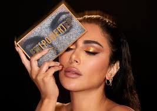
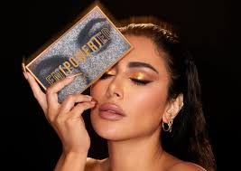

Certified Cruelty-Free - Kosar Beauty is proud to be certified by [Cruelty-Free International/PETA], ensuring that no products or ingredients are tested on animals. Organic Certification - Our products meet the rigorous standards set by [Ecocert/USDA Organic], guaranteeing that they are made with organic ingredients and environmentally friendly practices. Dermatologically Tested - Kosar Beauty products are dermatologically tested and approved by [Dermatology Association/Clinical Dermatology Group], ensuring safety and efficacy for all skin types. ISO 9001 Certified - Our manufacturing processes adhere to international standards of quality management and control, certified by [ISO]. Vegan Certified - We proudly carry the [Vegan Society] certification, affirming that our products contain no animal-derived ingredients. GMP Certified - Kosar Beauty adheres to Good Manufacturing Practices (GMP), as certified by [GMP Certification Authority], ensuring the highest standards in product safety and quality. Halal Certified - Our products are certified by [Halal Certification Authority], ensuring they meet the dietary and ethical standards of Halal. Fair Trade Certified - Kosar Beauty supports fair trade practices, with certification from [Fair Trade International], ensuring that our ingredients are sourced ethically and sustainably. EU Compliant - Our products comply with the strict regulations and safety standards set by the [European Union], ensuring quality and safety in every product. FDA Approved - Kosar Beauty products meet the safety standards set by the [U.S. Food and Drug Administration], affirming their safety and efficacy.
.jpeg) 
